绕着原子行走的人
错乱的几何问题
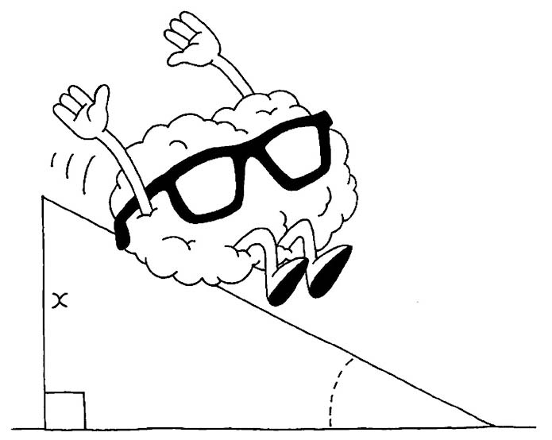
第一个通过手中的笔向世人展示逻辑推理乐趣的人是欧几里得（Euclid）。公元前300年左右，这位古希腊数学家完成了《几何原本》（Elements）的创作。
从表面看，《几何原本》是一本几何学著作。也就是说，它研究的无非是点、线、平面和立体图形。但是，它对人类思想史的真正意义在于，它把欧几里得研究这些概念时使用的方法介绍给我们。在这本书的开头，欧几里得先给出了一些定义和5条基本规则，并且告诉我们，这5条规则被公认是正确的。然后，他以这些规则为前提，推导出全书的余下所有内容，而且所有步骤环环相扣，严谨无误。这个方法威力巨大，可以搭建起一个庞大的知识体系。只要预先给出的规则是正确的，就可以保证所有推理结果也是正确的。《几何原本》是之后所有数学研究争相仿效的模板。
实际上，欧几里得一开始只有一把画直线的尺和一个画圆的圆规。但是，他凭借这两个简单的工具，却完成了全书所有定理（多达数百条）的证明。
举个例子。利用尺规作图，将给定的线段两等分：
步骤1：将圆规的一只脚置于线段的一个端点处，把装铅笔的脚置于另一个端点处，画一个圆；
步骤2：将圆规的两只脚的位置对调，再画一个圆；
步骤3：用直尺连接两圆的交点，连线将会平分给定的线段。
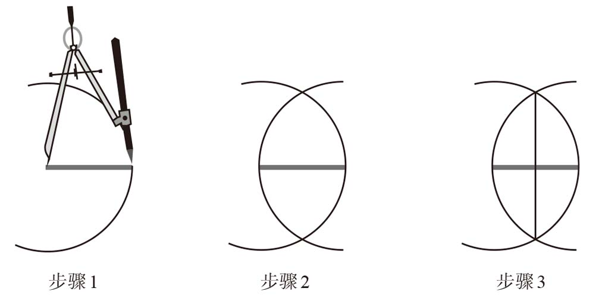
事实上，《几何原本》中的所有定理都是以问题的形式出现的，证明则是以求解的形式给出的。事实上，它就是一本趣题集，只不过没有明说罢了。我特别喜欢下面这道题，因为它让我们看到欧几里得的工具并不只有一把直尺和一个圆规，相反，它让这位把极简概念发挥到极致的大师露出了马脚。
孤零零的直尺
给你一支铅笔和一把直尺，但没有圆规。如下图所示，直尺有两个刻度。你能用这把直尺，画一条长度正好等于这两个刻度之间距离一半的线段吗？换句话说，如果这两个刻度相距两个单位，你能画出一条长度为1个单位的线段吗？
测量长度时只能用直尺，不可以使用铅笔或纸。
我为本章选择的问题都是几何问题，也就是说，你可以通过研究线条、形状和实物的属性，感受到解题的乐趣。下一个问题源于18世纪版的《几何原本》。接替艾萨克·牛顿担任剑桥大学卢卡斯数学教授的威廉·惠斯顿（William Whiston）为这一版本添加了注释，他在注释中提到的一个古怪的数学问题，后来成为广为人知的趣味问题。
惠斯顿的问题是：如果一个人绕地球走一圈，那么他的头比他的脚多运动了多少距离呢？你能算出这个距离吗？在这里，我们假设地球是一个完美的球体。
我来帮大家计算一下，但我们必须具备一些初等数学知识：圆的周长公式。圆的周长等于π乘以半径的2倍，通常简写为2π(r，其中π约等于3.14。我希望这个公式的引入不会影响你看到最后答案时的惊喜心情。接下来，请耐心地看我解答这道题。
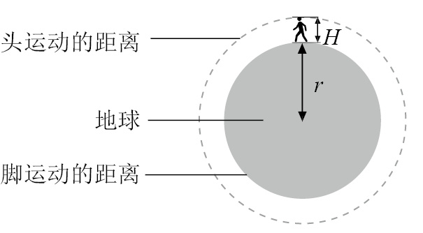
上图中，r是地球半径，H是这个人的身高。根据圆周长公式可知，地球的周长（即人双脚运动的距离）是2π(r，虚线圆的半径是地球的半径加上人的身高，因此虚线圆的周长（即头的运动距离）是2π(r + H)。两个圆周长之差，就是头比脚多运动的距离：
2π(r + H) – 2πr = 2πr + 2πH – 2π(r = 2πH
消去包含2π(r的项（记住这个操作！），就会发现答案是2πH，即2×3.14×人的身高。
也就是说，如果人的身高是1.8米，那么头比脚多运动的距离大约是11米。
惠斯顿当时特别指出这个答案很有意思，现在大家明白其中的道理了吧？原因在于，这个距离太小了！地球的周长大约是40 000千米，绕地球行走了数万千米之后，这个人的头仅比他的脚多运动了大约11米，相当于整个旅程的0.000 03%。实在令人难以想象！
下面这道经典问题也源于惠斯顿的环球旅行问题。
绕地球一圈的绳子
一根绳子紧紧地缠绕在地球的圆周上。把绳子加长1米，然后把它从地面提起，使它再次变成一个绷紧的圆圈，且绳子上的每一点相对于地面的高度都相同。
请问绳子现在的高度是多少？多大的动物可以从绳子下面爬过去？
从下图可以看出，这个问题和上一个问题在本质上是一样的。两道题都需要将两个同心圆进行比较，其中较小的那个圆是地球的圆周。在本题中，大圆的周长比小圆长1米。
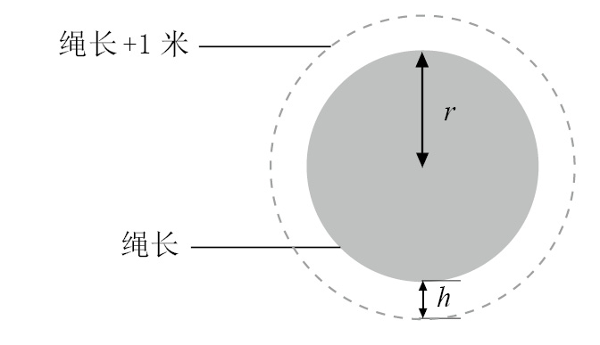
换成绳子之后，问题的答案与我们的直觉之间的反差就更明显了。绳子加长1米后，可以抬离地面的高度是
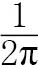
米，约等于16厘米。（解题过程如下：设地球的圆周长是c，则加长的绳子的长度为c + 1。利用周长公式可以得出两个方程：2π(r = c和2π(r + h) = c + 1。两者结合就会得到2πh = 1，因此h =。）想想看，这个结果意味着什么？我们有一根40 000 000米长的绳子，然后把它加长到40 000 001米。加长的幅度显然非常小，但要让这根绕地球一周的绳子再次绷紧，就必须让它与地面保持大约16厘米的距离。哪些动物可以从绳子下方爬过去呢？显然，猫或者体型较小的狗可以毫不费力地爬过去。
现在，我们回过头接着考虑绕地球行走的问题。当计算人的头比脚多运动的距离时，我们消去了两个含有2π(r的项，最后得出答案：2π×人的身高。此时，我们有一个重要发现：地球的半径r并没有出现在答案中；人的头多运动的距离只与身高有关，而与地球的大小无关。换句话说，地球的大小对答案没有任何影响。无论惠斯顿的漫步者绕着多大的球体行走，他的头多运动的距离都一定是11米。
（1）一个人绕原子走一圈，他的头比脚多运动多少距离？
（2）一个人绕足球走一圈，他的头比脚多运动多少距离？
（3）一个人绕木星（周长约为40万千米）走一圈，他的头比脚多运动多少距离？
（4）一个人绕太阳（周长约为440万千米）走一圈，他的头比脚多运动多少距离？
答案全都是11米（当然，不考虑实际情况中的困难）。同样，如果把环绕原子、足球、木星或太阳的绳子加长1米，要让加长后的绳子重新绷紧，绳子都需要整体抬高16厘米。这太令人吃惊了！
威廉·惠斯顿在剑桥大学只做了8年的卢卡斯数学教授，就因为信仰异教而遭到驱逐。从此以后，惠斯顿再也没有回到学术界，而是在伦敦的咖啡馆里讲授数学和科学。
惠斯顿对科学的最大贡献是，他在说服英国政府成立经度委员会（Board of Longitude）的过程中发挥了关键作用。经度委员会曾发布一道悬赏令，希望找到海上船只经度的计算方法。尽管惠斯顿希望赢得这笔钱，但他多次尝试也没有解决这个问题。因此，如果说惠斯顿对数学的最大贡献就是他设计了一道环绕地球航行的趣题，也是非常恰当的。
相较用绳子绕地球一周的问题，我更喜欢惠斯顿提出的人绕着地球行走的问题。这两个问题显然都非常荒谬，但前者的设计痕迹更加明显。如果真有一根绳子环绕着地球，而且你把它加长了1米，那么你肯定希望捏住绳子上的某一点，看看这一点可以被提至多高，而不是了解绳子整体可以提至多高。如果你的目的是让动物从绳子下面爬过去，就更应该如此了！
于是，我们有了下面这个新问题：
给你一根绕地球一圈的绳子。现在把它加长1米，你捏住绳子上的某一点把这根松弛的绳子提起，使它再次紧绷。请问，绳子可以提至多高？哪些动物可以从绳子下面爬过去？
不要费劲儿做这道题了，因为只有具备一定的数学水平，才有可能找到答案。我把这道题放在这里，是因为它的答案很有意思。先猜一猜，再看书后的答案。不过，最好先做下面这道题再看答案。
提示：我们需要用到勾股定理。该定理告诉我们，直角三角形斜边的平方等于其他两边的平方和。（斜边就是直角所对的那条边。）大家肯定知道这条定理，对吧？
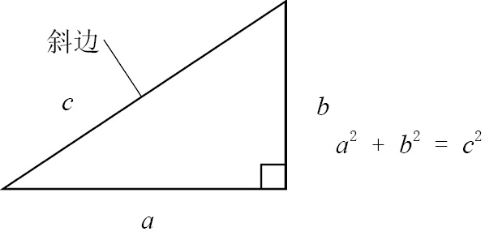
街头聚会的彩带
你所在的街道将举行聚会。街道全长100米，装饰用的彩带长101米。你把彩带的一头系在街道一端的灯柱底部，另一头系在街道另一端相距100米的另一根灯柱底部，然后把彩带的中点系在街道中间灯柱的中点处。
假设彩带拉得很紧，但是没有被拉长。请问，灯柱的高度是多少？
接下来的三个问题与滚动的圆有关。如果你以前从未想过圆的滚动有什么特点，那么这几个问题可能会让你摸不着头脑。但我保证，不论你是通过什么方式找到正确答案的，你都会忍不住发出惊叹声。做完这三道题，当遇到后文中与日本有关的那几个问题时，就不会觉得难了。
《几何原本》确立了欧几里得逻辑大师的地位，但是，这位以头脑冷静、推理严谨著称的“大祭司”遭遇了夏洛克·福尔摩斯（Sherlock Holmes）的挑战，后者不仅分享了他头顶上的光环，甚至还有进一步超越他的趋势。
这位虚构的侦探追求的是欧几里得式的严谨：“我都和你说过多少次了：把所有绝不可能的事情都排除之后，剩下的事情即使再不可思议，那也是真相！”不过，他的严谨在数学面前似乎也不值一提了。
在一个早期的福尔摩斯系列故事《修道院公学》（The Adventure of the Priory School）中，福尔摩斯仅凭借自行车留下的两列车轮印，就推断出那辆自行车的前进方向。他向华生解释了他的推理过程：“自行车的重量都落在后轮上，所以后轮留下的车轮印当然会更深。你看，有几个地方，深的车轮印从浅的上面碾过，完全盖过了浅的车轮印。毫无疑问，这辆自行车正在离开修道院。”
我不是很明白他的推理。但是，不管骑自行车的人往哪个方向走，后轮都会盖过前轮留下的印痕，不是吗？
其实，利用车轮印痕的确有可能推断出自行车的前进方向，但福尔摩斯的作者阿瑟·柯南·道尔爵士（Sir Arthur Conan Doyle）错过了一个自我表现的机会。
骑上你的自行车，夏洛克！
下图是骑车人留下的车轮印，请问他的行进方向是从左向右还是从右向左？
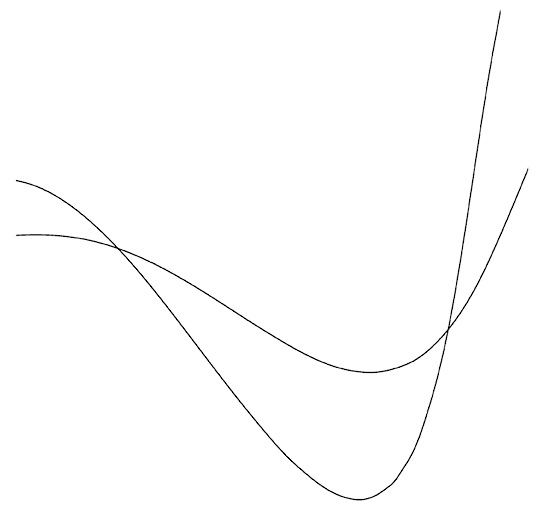
福尔摩斯说的没错，你先要分出哪条车轮印是前轮留下来的，哪条是后轮留下来的。但是，你无须知道车轮印的深浅，就可以完成这项工作。
下面这道题也跟自行车有关。也许你可以根据直觉说出答案。下题的两幅图中，一幅看上去很正常，另一幅似乎有点儿不对劲儿。你知道是怎么回事吗？
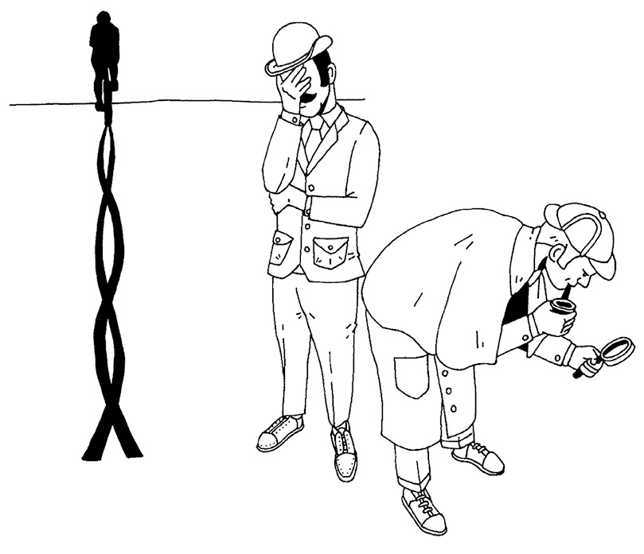
模糊数学
一位摄影师正在拍摄运动中的自行车。自行车沿着水平道路行驶，但我们不知道它的方向是从左向右，还是从右向左。不过，方向并不重要。自行车的车轮呈圆盘状，上面有两个五边形标志。
请问，下面两个图形中，哪一个是摄影师拍摄的照片？
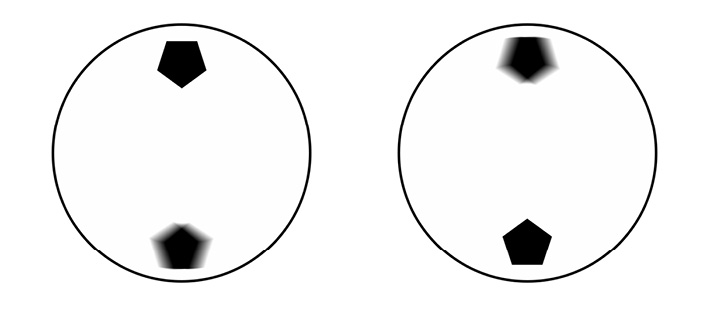
上面这道题告诉我们，圆在滚动时表现出来的特点比表面看起来更加微妙。
下面这道题选自美国SAT（学术能力评估测试）中的一般能力测试。1982年，全美有30万人参加了该项测试，只有3人做对了这道题。你也来试试看吧。
绕着圆转圈
圆A的半径是圆B的半径的。圆A沿圆B的圆周滚动，再次回到出发点时，圆A一共滚了多少圈？
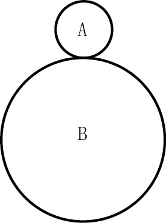
（a）
（b）3
（c）6
（d）
（e）9
接下来，我给大家准备了不同风味的大餐。
8张白纸
桌子上放着8张同样大小的正方形白纸，纸张的边缘构成如下图案。其中，完全露在外面的白纸只有1张，被标上了数字1。
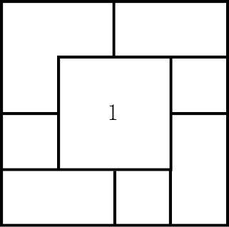
找出第二层白纸并标上2，找出第三层纸并标上3，以此类推，你能给所有白纸都标上序号吗？
我在藤村幸三郎（Kobon Fujimura）的杰作《东京趣题集》（The Tokyo Puzzles）中第一次看到这类白纸问题。20世纪30—70年代，藤村是日本趣题之王。他出版了很多书，其中一些非常畅销。20世纪50年代，他还在电视上推出了每周一次的趣味问题节目。藤村深受欢迎这个现象，预示着现代日本趣题将蓬勃发展。21世纪初，数独游戏在国际上风靡一时。本章将深入介绍这类问题。
与西方人相比，日本人更喜欢从数字中寻找乐趣，至少我两次去日本都有这种感受。学生们背诵乘法表时仿佛在唱轻松愉快的儿歌。把地铁票上的号码当游戏玩是日本人常用的消磨时间的手段。心算在这个国家变成了一项观赏性活动。学习珠算仍然是非常流行的课外活动，优秀的珠算手还可以参加巡回赛。2012年，我参加了日本全国珠算锦标赛。在两秒不到的时间内，参赛选手的眼前会闪现15个数，然后他们利用脑中想象的算盘，把这些数加起来。整个比赛既紧张刺激，又高潮迭起！
下面这道题是我非常喜爱的一道藤村趣题。
一分为二的正方形
下图的大正方形由16个小正方形构成，图中展示了将大正方形分割成两个相同图形的两种方法。
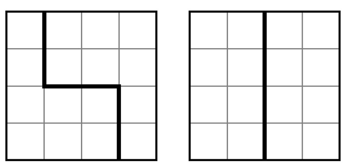
还有4种方法可以均分大正方形。你知道怎么分吗？
补充说明：只能沿着内部的线条分割，而且分割出来的两个形状必须完全相同。也就是说，如果这些方块是薄纸板，你可以把它们叠放到一起，然后通过调整位置，使它们对齐。如果你需要把其中一张颠倒过来（也就是说，把纸板从桌子上拿起来，翻动使之上下颠倒），才能使两张纸板对齐，那么这两个图形就不算完全相同[shu籍 分.享 V信jnztxy]。
接下来的这道题是本书最后一道藤村趣题。这道题含有曲线，可能需要用到圆的面积公式：圆的面积等于π乘以半径的平方，即πr2。
翅膀与透镜
下图是一个1/4个圆，其中包含两个小的半圆。请证明翅膀状的A部分与透镜状的B部分面积相等。
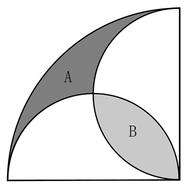
我非常喜欢这道题，不仅是因为这个图形很有美感，还因为它让我想起了日本的一个传统。17—19世纪，日本人习惯在神龛和庙宇外悬挂装饰用的木板，上面有各种各样的几何问题。这些数学图形叫作数字牌，它们不仅是宗教祭品，也是日本人公布最新发现的一种形式。他们把数学变成了公共活动，寻求视觉娱乐，满足猎奇的欲望。我在京都的一座寺庙里亲眼见过一个数字牌木板。木板上有用白色和红色颜料涂成的各种各样的图形，包括圆、三角形、球体等，非常漂亮。数字牌上的几何图形结构和谐，富有艺术感。西方几何学教科书的图形纯粹是为教学准备的，不具备像数字牌的这种美感。数字牌问题通常只把最终图形绘制在木板上，图形下方有少量铭文。现存的数字牌有数百枚之多。下面这个数字牌问题源于名古屋附近的一座寺庙，据说它是由一个名叫重年田边（Tanabe Shigetoshi）的15岁男孩于1865年提出的。
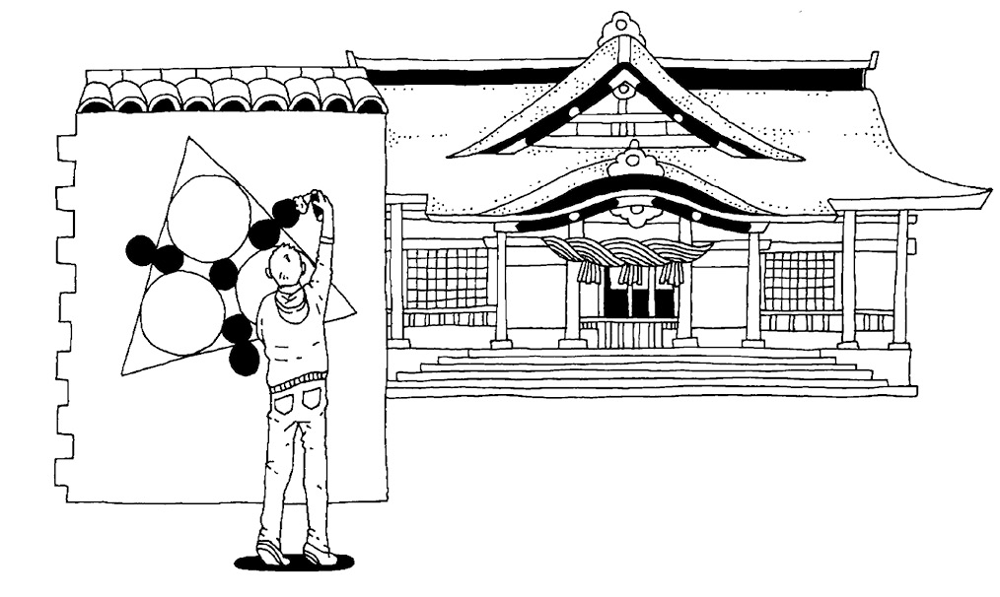
日本数字牌中的圆
下图一共有5种大小的圆。由小至大依次是6个白色的圆、7个深灰色的圆、3个浅灰色的圆、1个位于三角形内部的虚线圆和1个由实线构成的大圆。
请问，虚线圆的半径是白色圆半径的多少倍？
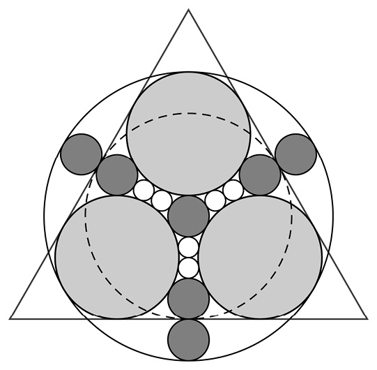
这道题中绚丽的图形让你眼花缭乱，不知道该从哪里入手。但是，一旦你找到方法，知道如何用一个圆的半径表示另一个圆的半径，你就会发现这道题真的太美了。
下面这道题也是由一个日本青少年设计的，而且他的年龄更小。1847年，东京以北大约300英里外的一座寺庙挂出了13岁少年佐藤直末（Sato Naosue）的数字牌。这道题比上一道题更复杂，因为你需要知道勾股定理——几乎所有涉及直角三角形的问题都需要应用这条定理。（需要回顾这条定理的读者可以回到前面第27个问题。）
日本数字牌中的三角形
下图中有3种不同尺寸的圆，包括2个黑色的圆、3个白色的圆和1个灰色的圆。请证明灰色圆的半径是黑色圆的半径的两倍。
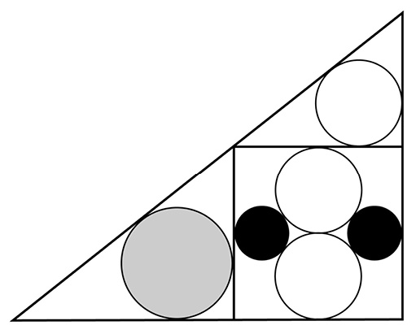
日本有使用榻榻米垫子的传统。这种垫子由稻草编织而成，脱掉鞋踩在上面，有一种柔软舒适的感觉。它们的形状通常为长方形，长是宽的两倍。
踩在榻榻米上
下面的图形是用榻榻米垫子拼成的。想象你正沿着垫子的边缘从A走到B。如果想走出最长的路径，你可能会在一开始的时候沿着那条最长的直线走，如第二幅图所示，先沿着顶部走，或者如第三幅图所示，先沿着一侧走到底。
但是，有一种走法比这两种方法的路径更长。你知道怎么走吗？
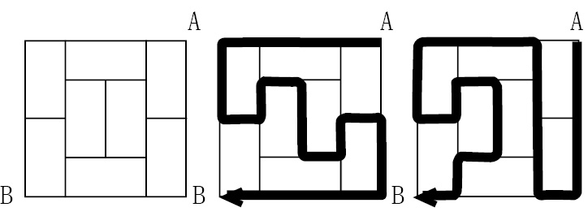
使用榻榻米垫子时，先要知道垫子的摆放方式有吉利和不吉利的区别。如果是3个垫子紧挨在一起，一定要让它们形成“T”形才吉利，上面这道题中的垫子就是这样摆放的。如果是4个垫子，让它们的角对齐构成一个“+”形的做法则是不吉利的。4个垫子相交于一点会不吉利，一些非常有意思的趣味问题也由此产生。
15个榻榻米垫子
请用2×1规格的榻榻米垫子铺满下面这个房间。注意：不得让4个垫子相交于一点。
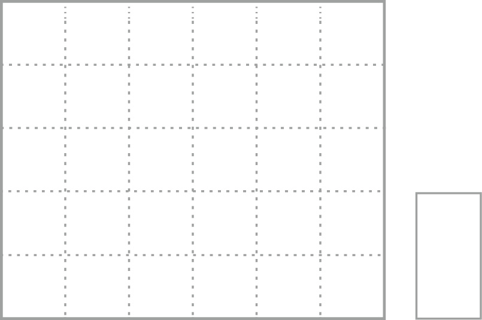
在做这道题和下一道题时，大家可以使用铅笔，以便做错时用橡皮擦掉。
芦原伸之本来是日本的一名化学工程师，但是在一次化学爆炸中受伤后，他就改行从事趣味问题的设计工作了，最终成为世界趣味游戏领域最具影响力的人物之一。他具有（专栏）作家、玩具设计师、收藏家和国际会议组织者等多重身份。芦原于2004年去世，但是他极具魅力、慷慨大方、童心未泯的形象，仍然铭刻在全世界热衷趣味游戏的同人们心中。他最成功的作品——“尖峰时刻”玩具是一种在方格中滑动塑料汽车和卡车的逻辑游戏，在世界各地的销量已经超过1 000万件。
本书开头引用的“数字树”问题就是芦原伸之设计的。此外，他还为榻榻米垫子的铺设问题引入了一个新的变化。下图中的房间被一条直线（加粗）横向贯穿，但是下一道题则要求在铺榻榻米垫子时不得出现横贯房间的直线。
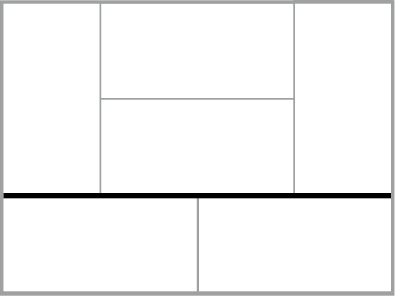
芦原伸之的垫子
请用15个2×1的榻榻米垫子铺满上一题中的房间。注意：不得出现横贯房间的直线，但是允许4个垫子相交于一点。
但是，并非所有房间都是矩形！例如，下道题中的房间被楼梯占去了两个角。
讨厌的楼梯
如下图所示，如果上面两道题中的房间有两个相对的角被切掉，用14个垫子就可以铺满整个房间。而且，这样做既不会留下空隙，也不会重叠。（垫子的摆放方式不受任何限制。）现在，我们把房间扩大，变成6×6的规格，仍然为楼梯留出两个角。请证明，在不留间隙、不发生重叠的情况下，用17个垫子不可能铺满这个新房间。
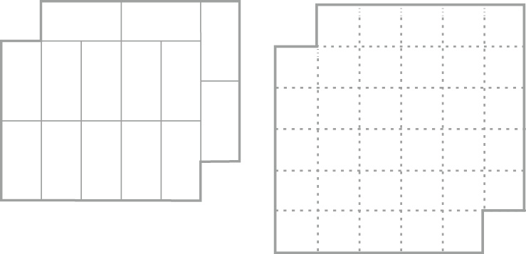
但是，楼梯并不一定总位于房间的角落！在下面这道题中，楼梯占用的两格是随机的。
位置不定的楼梯
建筑师决定不把楼梯放在6×6房间相对的两个角。如下图所示，如果房间里的方格像国际象棋的棋盘一样分成黑白两色，且一个楼梯在白色方格中，另一个楼梯在黑色方格中，试证明在不留空隙、不重叠的情况下，可以用17个榻榻米垫子铺满整个房间。每个垫子可以覆盖相邻两个方格，除不可占用预留给楼梯的方格外，铺设方式不受任何限制。
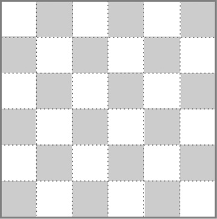
解题时，你需要证明无论楼梯在什么位置，均可以用17个垫子铺满房间，而不是只证明楼梯位于某个位置时的可行性。
我在《卫报》专栏发布了下面这道题之后，遭到了几位建筑师的嘲笑。他们认为这道题太简单了，因为答案是英国家装设计中的一种常见结构。他们的反应清楚地反映了一个现象：有的问题对于某些人来说难于上青天，但对于另一些人来说却易如反掌。
木板问题
以下是一个三维木质结构的俯视图和前视图，已知该结构的侧面都是平直的，请至少画出一个左视图。
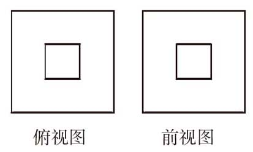
在绘制这些图形时，所有可见边都要用实线标出，而不可见边则必须标记为虚线。因此，下面给出的结构（由两个正方形面板构成，这两个面板有一条公共边，且分别凿有一个正方形的小孔）不符合本题要求，因为它的侧视图、俯视图和前视图都有表示不可见边的虚线（如图所示）。当然，根据题意，答案中的侧视图可以包含不可见边，但是，俯视图和前视图则不得含有不可见边，因为题目给出的俯视图和前视图中都没有虚线。
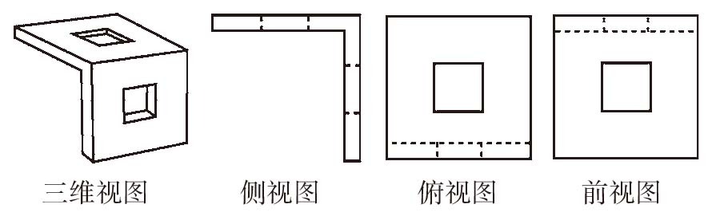
这里有必要提醒大家，该结构是木制的，所以各部件都不可能太薄。
接下来的两个问题将把我们带到住宅内部。
波罗米昂环（Borromean ring）是一个迷人的数学模型。三个环以一种神奇的方式结合在一起，如果取走其中任何一个环，剩下的两个环就会彼此分离。（如果这些环是由坚硬的材料制成，在相互重叠时就会产生扭力，各个环之间就会形成一个较小的倾斜角，但从下图中我们看不出这个微小的变化。）让我觉得有意思的是，任意两个环都没有彼此相连，但三个环在一起却无法分开。波罗米昂环经常被用来象征相互依存的三方关系，例如，基督教的肖像画就用它来代表三位一体。
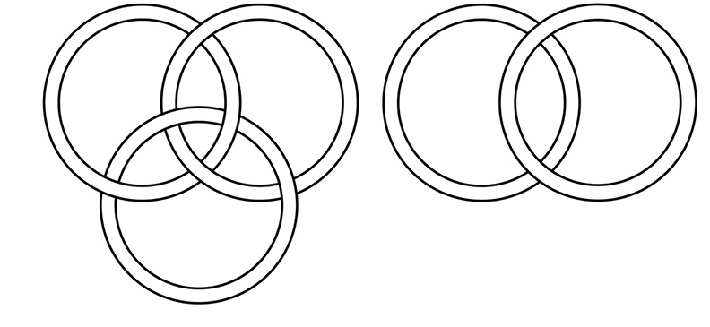
波罗米昂环
波罗米昂环得名于意大利文艺复兴时期的波罗米昂家族，因为他们的外套衣袖上印有三个锁在一起的环，但其实这种将三个物体结合到一起的方式在更早的时间就出现了。现在，作为维京文化的一个象征，由三个锁在一起的三角形构成的“死亡战士之结”（Valknut）经常出现在文身、吊坠和重金属风格的T恤衫上。
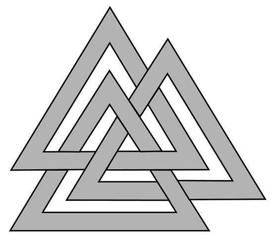
“死亡战士之结”
如果取走波罗米昂环中的任何一个环，整个结构就会分崩离析。下面这道题中的结构具有同样的特点。
墙上的照片
用两根钉子挂照片的正常方法是把绳子挂在两个钉子上，如下图所示。
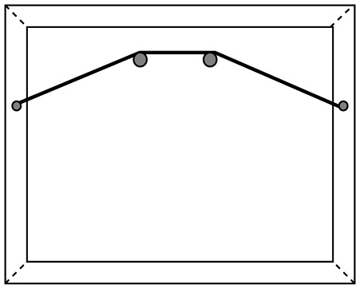
用两颗钉子的好处之一是：如果一颗钉子脱落，照片也不会掉下来，而是会挂在剩下的那颗钉子上。
你能否想到一种方法，当把绳子绕在两颗钉子上时，只要其中一颗钉子脱落，照片就会掉下来。（需要的话，绳子可以任意延长。）
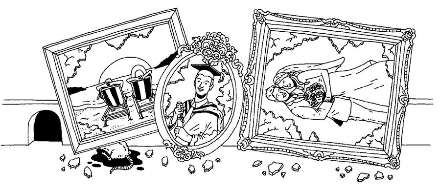
圆环和家居用品让我们自然而然地想到“餐巾环”这个数学概念。在球体上钻一个圆柱形的洞，并使它的中心线经过球心，剩余的部分就是一个餐巾环。下面这道题给出的信息非常少，所以难度很大。
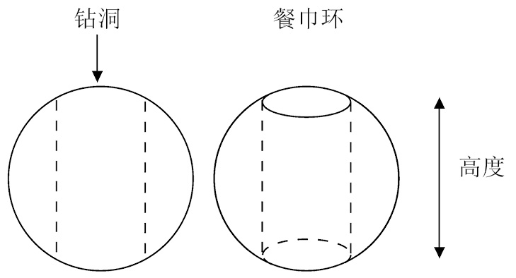
值得一看的餐巾环
餐巾环的深度为6厘米，它的体积是多少？
这道题需要费点儿力气，但是不用担心，我会带领大家一起做。相信我，这道题值得一做。
餐巾环的体积等于球的体积减去球体中心被挖取部分的体积，而被挖取部分的形状与圆柱体非常接近，但顶部和底部各有一个圆顶。
我在下图中标注了圆柱体的高度——6厘米。设球体的半径为r，圆顶的高度是h，圆柱截面的半径（也就是圆顶底部的半径）是a。下面是大家需要知道的体积计算公式：
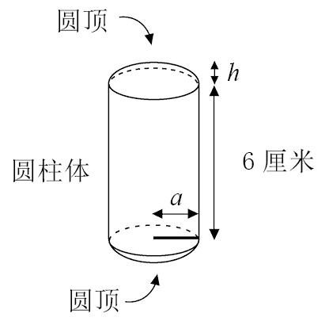
球体的体积：
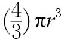
圆柱体的体积：πa2×6，即6π a2
单个圆顶的体积：
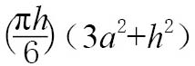
胜利就在眼前了。餐巾环的体积等于球体的体积减去圆柱体的体积，再减去两个圆顶的体积。利用勾股定理，a可以表示成r的形式，h也可以表示成r的形式。所以，餐巾环的体积可以写成仅包含一个变量r的表达式。该表达式很长，里面有大量的r和π……
赶紧动手吧！
历史学家希罗多德（Herodotus）说，几何学源于埃及，因为埃及人需要测量被尼罗河淹没的耕地面积。现在，我们在学习几何学时，先需要学会计算正方形和矩形的面积——相邻两边边长的乘积。
掌握这个简单的计算方法之后，就可以解决日本发明家稻叶直树（Naoki Inaba）提出的“面积难题”（Menseki Meiro）了。
下面举一个例子，帮助大家掌握这类题的解法。请大家找出下图中“？”代表的值。图中线段的长度都不精确，所以不能通过测量得到答案。
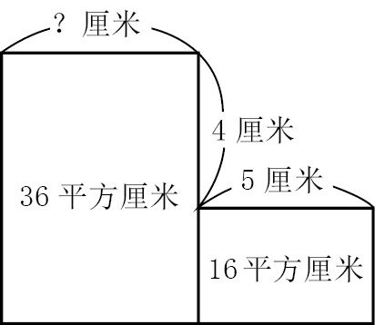
这道题的精妙之处在于，解题时必须使用几何方法，必须使用整数，而不允许使用方程，更不允许使用分数。要解决这道面积难题，可如下图所示，将大矩形补全。A的面积是20平方厘米，因为它的面积等于4厘米×5厘米。也就是说，A与它下方矩形的面积之和是：20平方厘米 + 16平方厘米= 36平方厘米。这个面积和左侧大矩形的面积相等。既然高度相同，宽就必然相等，也就是说，“？”代表的值是5厘米。
面积难题
求出下图中灰色长方形的面积。
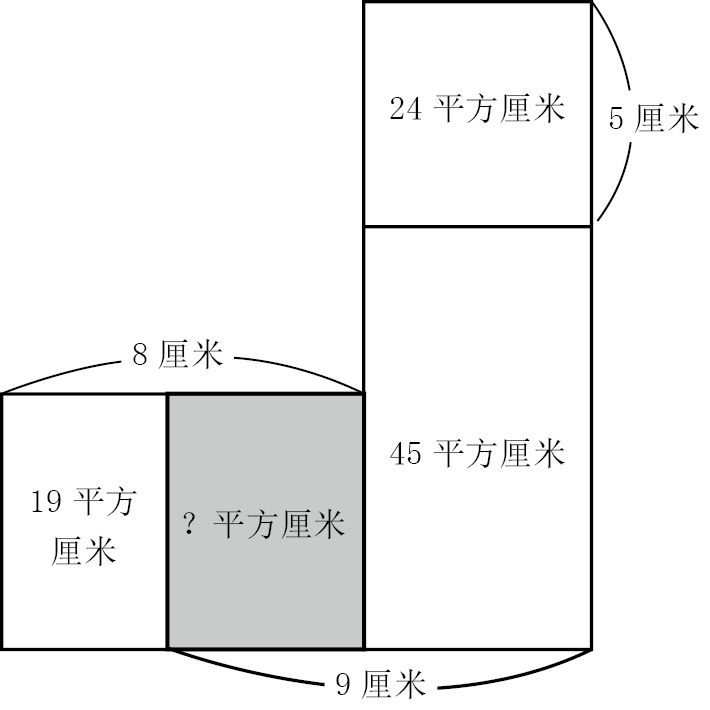
稻叶直树可能是当今世界健在的最多产、最优秀的推理题设计师，但出了国门之后，他的作品就鲜为人知了。事实上，在稻叶等人以及《尼克利》（Nikoli）杂志社的努力下，日本对趣味问题的热衷程度堪称世界之最。
你可能没听说过尼克利这家公司，但你一定听说过数独。20世纪80年代中期，数独第一次出现在《尼克利谜题交流》（Puzzle Communication Nikoli）杂志上。尼克利从美国杂志《戴尔铅笔填字游戏》（Dell Pencil Puzzles and Word Games）中引入了这个名为“填数字”的游戏，并将其更名为“数独”。下面，我将对数独做一个简单介绍，以免你近年来孤陋寡闻，不知道数独（以及榻榻米垫子）为何物。所谓数独，就是一个包含若干个给定数字的9×9网格。解题者在填数字时要保证每个数字在每行、每列以及每个3×3小宫格中只出现一次。1986年，尼克利决定借鉴纵横填字谜的方式，使给定数字构成对称图形。至此，数独引起了广泛关注。尼克利的这个调整非常奏效，在日本国内取得了巨大成功。英国演说家韦恩·古尔德（Wayne Gould）在日本度假时发现数独问题之后，用电脑程序制作了一些数独网格，然后供稿给几家报纸，其中包括伦敦的《泰晤士报》（The Times）。2004年年底，《泰晤士报》上首次刊登了数独游戏。几个月之内，数独就在多家报纸上占据了一席之地，成为每天必不可少的一个内容。
自尼克利于1980年发行季刊以来，该公司已经发表了大约600种不同类型的趣味问题，但是，令尼克利声名大噪的这些趣味问题却不是它自己的发明。这的确有些讽刺。尼克利的特色产品是像数独这样的网格问题，要求答题人将网格（通常是正方形网格）填充完整。数独问题的魅力之一是对细节的关注，给定的元素通常在网格里构成对称图形，或者是经过精心设计的造型。规则通常都非常简单，用铅笔慢慢将网格填完整，总能给人一种心满意足的愉悦感，令人欲罢不能。对像我这样的人而言，数独与涂色游戏一样，是一种有益身心健康的活动。为了让大家也爱上这个游戏，我会举4个例子。
尼克利的杂志发行量大约为5万份，读者群不仅包括喜欢答题的人，还包括大量趣味问题的设计人员。这些设计人员每年都会为杂志提供数百条建议。下一道题——“四方形问题”（Shikaku），就源于21岁的大学生安福义直（Yoshinao Anpuku）提供给尼克利的创意。后来，安福加入了尼克利公司，现任该公司编辑室执行主任。
四方形问题
四方形问题要求答题人将方格分割成矩形或正方形的“宫”（box），方格中给出的数字表示该数字所在宫的面积，即宫包含的单元格的数量。
下面，我带大家一起完成这道题。下图中的A是题目给出的初始方格，C是分割后的最终方格，所有矩形和正方形的宫均已被标出。做这类题时，从初始方格中最大的数字入手比较好，因为它所在宫的形状与位置通常会受到诸多限制。本题中最大的数字是9，面积为9的宫只能是9×1的矩形或者3×3的正方形。由于横竖两个方向都没有连续9个空白的单元格，所以它只能是一个正方形的宫，且位置唯一，如B所示。同理，唯一一个包含数字8、面积为8的矩形宫与唯一一个包含数字6、面积为6的矩形宫也只能位于图中所示的位置。这些宫被确定之后，就可以顺利地推理出其他宫的位置了。
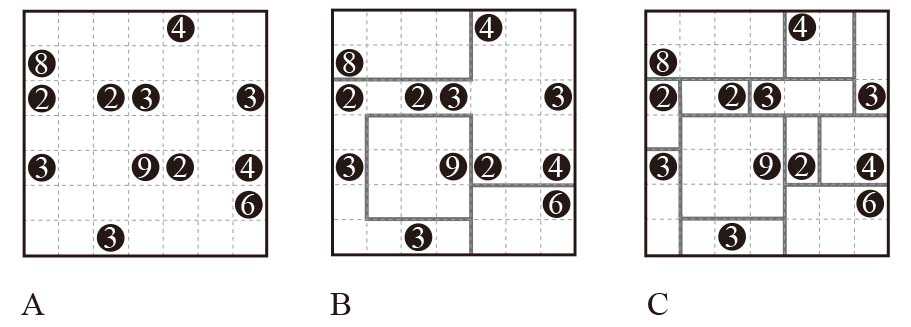
接下来，该你们一试身手了。
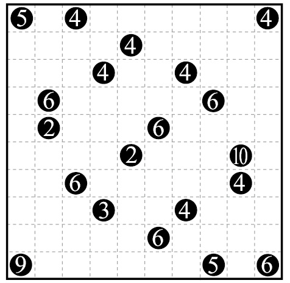
尼克利的创始人锻治真起（Maki Kaji）对赛马尤为痴迷，公司的名称就源自1980年爱普森德比大赛中爱尔兰人训练的那匹夺冠呼声不高的赛马。2008年，我第一次在东京见到锻治。他告诉我，他有两大爱好：第一个是收集橡皮筋，第二个是看到包含乘法口诀的车牌［例如，23 06（2×3 = 6），77 49（7×7= 49）］，就会拍照留念。2016年第二次见面时，他说他收集橡皮筋的爱好仍在继续，而且刚刚收集到一些泰国和匈牙利产的珍品。此外，包含1到9的乘法口诀的车牌的拍摄工作也已经完成了大约85%。他说：“就快大功告成了，但是我给自己制定了一条规则：我不会有意识地寻找这些乘法口诀。只在不经意间碰到时，我才会拍摄照片。”
数回
数回（Slitherlink）游戏要求答题人用横线或竖线把各个点连接在一起，构成唯一的环路。方格中的数字表示包围该数字的线条数，也就是说，1的周围有1条线，2的周围有两条线，以此类推。如果方格中没有数字，则表示不知道周围有几条线。最后得到的环路不得与自身相交，也不得有岔路。
图A中包含数字0，这表示它们周围没有线条，因此我们显然应该从0入手。如图B所示，在0的周围画上“×”，表示那些地方没有连线。其中一个×在3的旁边，表示3周围的3条线只有一种画法，把这3条线画好。接下来，我们在图C中让环路继续向上延伸。要绕过数字2，只有一条路可走。注意，我在图B中还做了a、b、c和d这4个标记，表示从两个3中间的那个点出发，一共可以画4条线。环路必须通过这个点，因为一个单元格周围有3条线时，所有4个顶点都必须用到。环路不能既经过a又经过b，也不能既经过c又经过d，否则就会形成岔路，而岔路是不允许出现的。因此，从两个3中间穿过时，环路必须走另外两边。我们在图C中把这两条通路画好。整个环路完成之后，就会出现图D所示的结果。
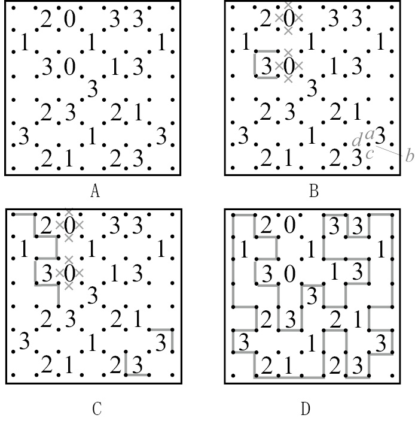
下面是我给大家准备的一道题。记住，只能有一条环路，不得交叉，也不能有岔路。答案只有一个，而且只能根据逻辑推理得出答案。
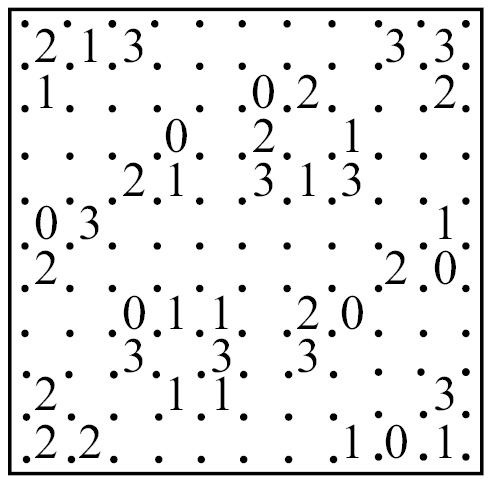
数回是锻治真起最喜爱的尼克利趣味问题之一，也是我的最爱之一。随着环路慢慢地延伸，逐渐布满整个方格，巨大的满足感会油然而生。
递减高尔夫
尼克利的趣味游戏不断推陈出新，递减高尔夫（Herugolf）就是该公司近来推出的一款新游戏。打高尔夫球时，球越靠近洞口，选手击球的力度就会越小，尼克利从中受到启发，设计出递减高尔夫这款游戏。
在游戏中，你需要不断击打小球（用圆圈表示），使其进入相应的洞（用字母H表示）。圆圈中的数字表示球受到第一次击打后前进的距离（单元格数）。如果没有一杆进洞，即没有到达标有H的单元格，那么第二次击打时球前进的单元格数就会减1。如果第二次击打仍然没有达到H，则第三次击打时前进距离再减1，以此类推。因此，标有3的小球（以下简称3号球）有3种进洞路线：第一，正好前进3格进洞；第二，前进3格，再前进2格进洞；第三，前进3格，再前进2格，之后前进1格进洞。小球只能沿水平或垂直方向前进，每次击打时，可以保持之前的击打方向，也可以改变方向。
小球的前进路线不得相交；必须保证击打后小球最终正好进洞；每个球洞只能进一个球；阴影部分是障碍区，击打时可以穿过障碍区，但不得让小球停留在该区域。
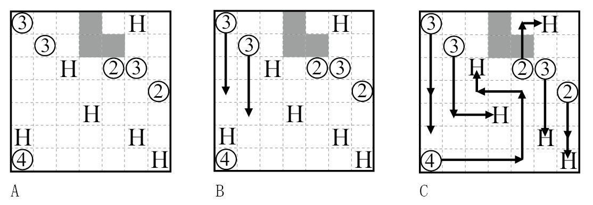
在给出的示例中，A是初始方格。我们先要查看是否可以确定某些小球的第一次击打方向。左上角的3号球在第一次击打后必须前进3格，但是它不能沿水平方向运动，否则就会停留在障碍区。因此，这个小球只能朝下方运动，如图B所示。同理，它斜下方的3号球也只能朝下方运动，因为沿水平方向击打就会使它停在障碍区。这两个3号球遭到第二次击打后都只能前进2格。由于路线不得相交，所以从左上角出发的3号球必须继续向下，前进2格后正好进洞。另一个3号球则必须水平运动，因为再向下2格后，第三次击打只能让它前进1格，无法进洞。而在水平方向上前进2格后，这个3号球也正好进洞。图C是游戏顺利结束后的最终方格。
下面，该你击球了！
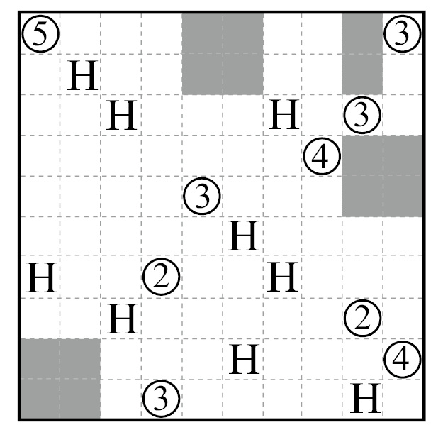
装电灯泡
接下来，我向大家介绍最后一道尼克利问题——装电灯泡（Akari）。这道题的灵感来自现实生活：在房间里装电灯泡。根据题目要求，答题人需要安装电灯泡（用圆圈表示），以照亮整个方格。黑色单元格中的数字表示需要在该单元格上、下、左、右安装的电灯数量。每个灯泡都可以照亮它所在行、列上所有不被遮挡的单元格。周围没有数字的单元格里既可以安装灯泡，也可以不安装。最终，所有白色单元格必须被照亮，但所有灯泡都不得被其他灯泡发出的光照到。
在给出的示例中，图A是一张空白的方格。根据规则，数字表示水平和垂直方向上邻近灯泡的个数，也就是说，在水平与垂直方向上与数字4相邻的所有单元格中都有灯泡。同理，在水平与垂直方向上与数字0相邻的所有单元格中都没有灯泡，因此我在这些单元格中画上了圆点，如图B所示。与4相邻的单元格中有两个同时也与数字2相邻，说明数字2另外两侧就不能有灯泡，因此我在2上方和左方的单元格中也画上圆点。接下来，请参看图C。图中箭头表示上图中4个灯泡可以照亮的行与列。数字3上方的单元格可以被其中一只灯泡照到，因此这里不能安装灯泡，这同时表明数字3的其他三个相邻位置都应该安装灯泡。根据推理，a的位置需要安装一只灯泡，因为要照亮这个单元格，而其他所有安装位置要么被加上了无灯泡标记，要么在其他灯泡的照明范围之内。本题最终答案如图D所示。
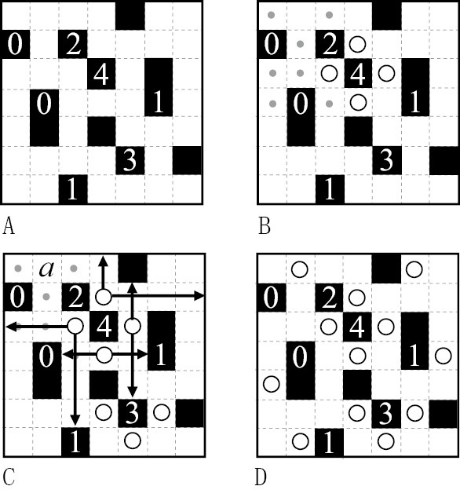
接下来，请大家按照同样的方法，照亮下面这个方格。
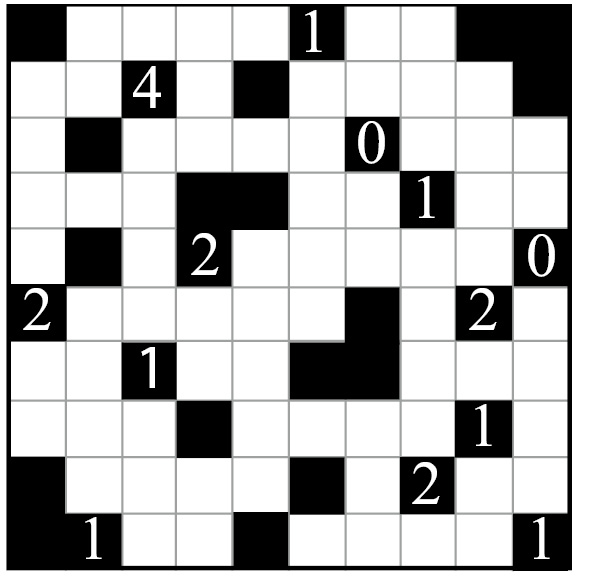
在最后一道几何问题中，我将请大家为奇形怪状的房间安装灯泡。
下图所示是一个房间的水平截面。图中灯泡是房间中唯一的光源。打开电灯，图中用粗线标示的那堵墙就会整体处于阴影之中。（假设墙面不反光。）
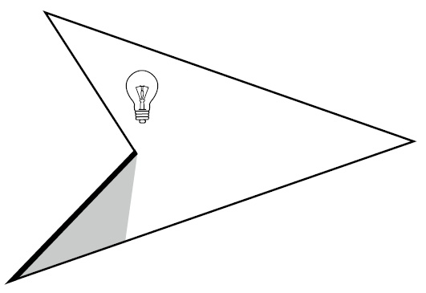
黑暗的房间
请设计一个只安装了一盏电灯且所有墙面均为平面的房间，使电灯打开时，所有墙面整体或部分处于阴影之中。
要求：所有墙面必须彼此相连，不得有独立的墙体，且墙体的边缘不得向外伸出[shu籍 分.享 V信jnztxy]。